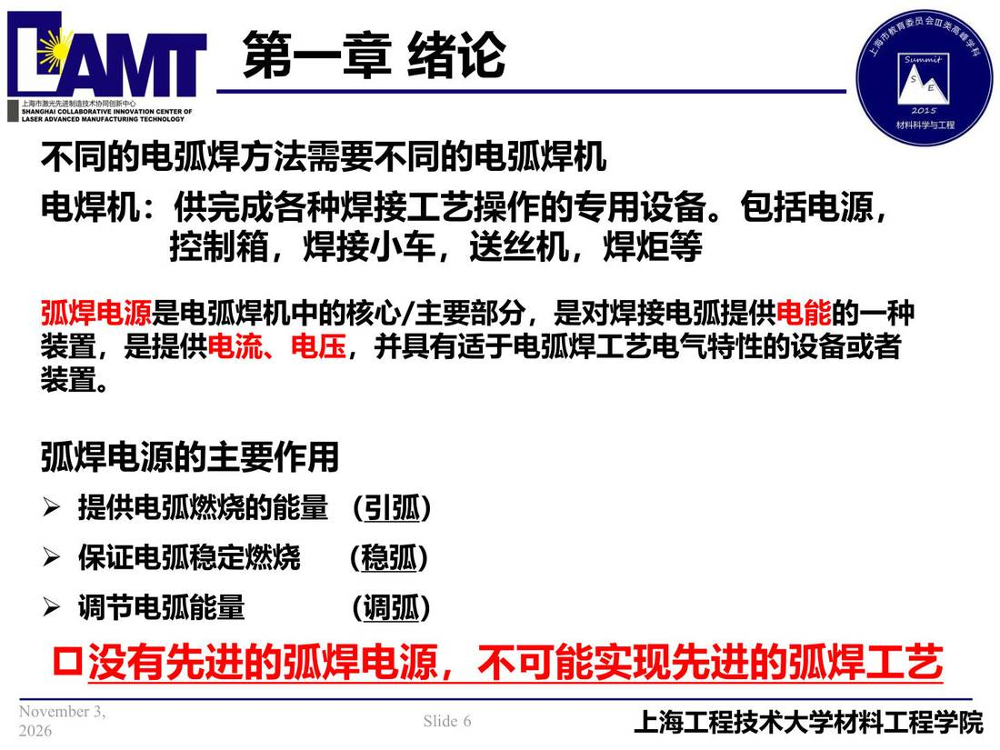

01 第1章 绪论/p006 不同的电弧焊方法需要不同的电弧焊机
p006 不同的电弧焊方法需要不同的电弧焊机
📄 原文：📄 弧焊电源 课件（PDF 第 6 页）（幻灯片 6/273；PDF 第 6 页）
不同的电弧焊方法需要不同的电弧焊机

讲义原文
电焊机：供完成各种焊接工艺操作的专用设备。包括电源，
控制箱，焊接小车，送丝机，焊炬等
弧焊电源是电弧焊机中的核心/主要部分，是对焊接电弧提供 电能的一种装置，是提供 电流、电压，并具有适于电弧焊工艺电气特性的设备或者装置。
弧焊电源的主要作用
- 提供电弧燃烧的能量 （引弧）
- 保证电弧稳定燃烧 （稳弧）
- 调节电弧能量 （调弧） p没有先进的弧焊电源，不可能实现先进的弧焊工艺
本页标红（老师强调）
- 弧焊电源
- 电流、电压
- p没有先进的弧焊电源，不可能实现先进的弧焊工艺